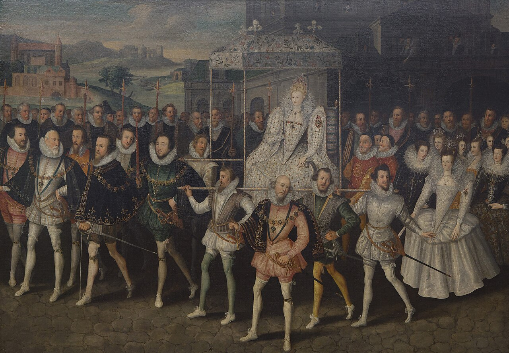
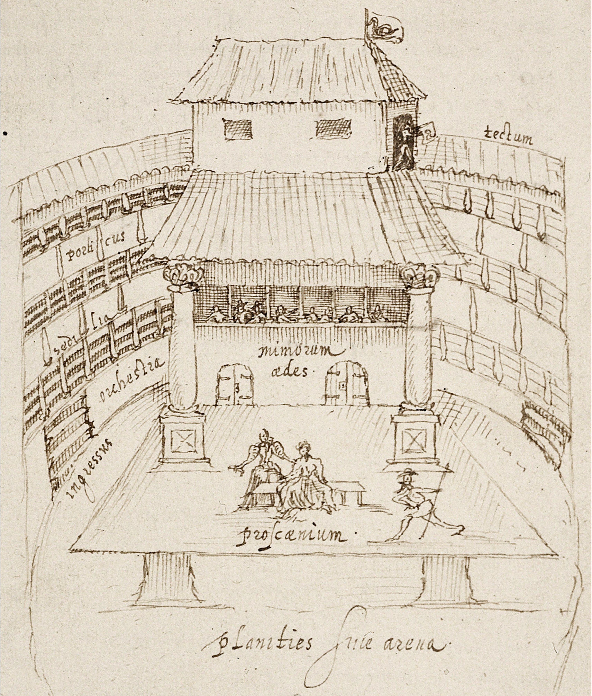
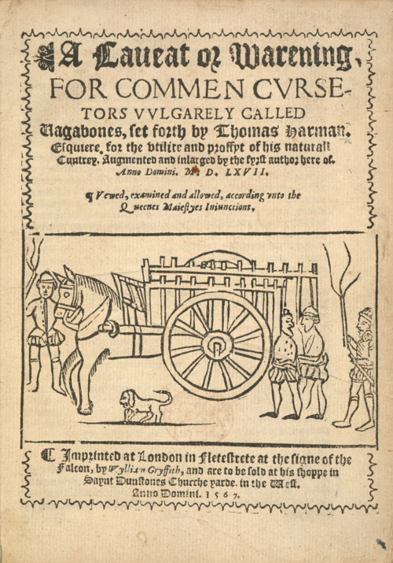
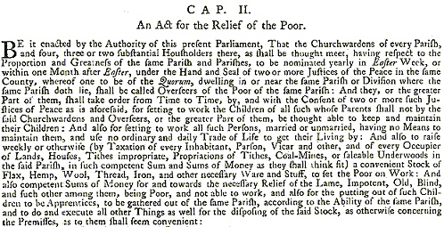
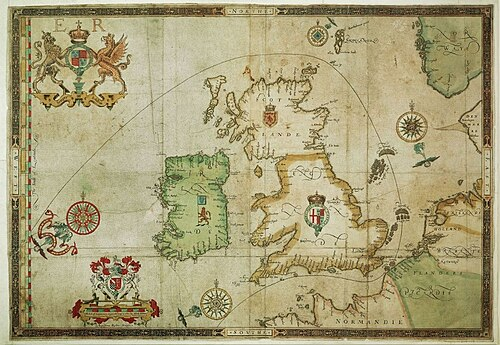
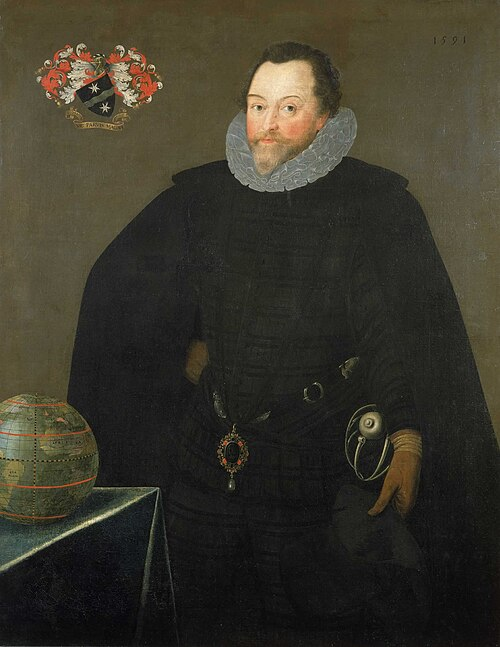
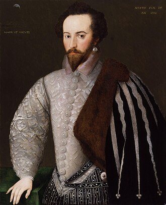

Key Topic 3: Elizabethan society in the Age of Exploration, 1558-88
Paper 2: Early Elizabethan England, 1558-88
Course Textbook
Enquiry: From religious division to the Armada: How did Elizabeth secure her throne?
Contents
|
Lesson 1: KT 3.1: Education and Leisure in Elizabethan England, 1558–1588
|
|
|
Lesson 2: KT 3.2: The Problem of the Poor and Vagrancy, 1558–1588
|
|
|
Lesson 3: KT 3.3: Exploration and Voyages of Discovery, 1558–1588
|
|
|
Lesson 4: KT 3.4: Raleigh and the Colonisation of Virginia, 1584–1590
|
|
L1: KT 3.1: Education and Leisure in Elizabethan England, 1558–1588[[SRC_MARKER:L8_Start]]
Learning Objectives
Explain and evaluate Attitudes to Education & Literacy (1558–1580s): Literacy at 30% for Men & 10% for Women, Petty Schools & Dame Schools for Basics, Reinforcing Great Chain of Being.
Explain and evaluate Grammar Schools (1558–1580s): Over Seventy New Endowed Schools Founded, Latin Grammar & Classical Rhetoric Curriculum, Social Mobility for Middling Sons.
Explain and evaluate Universities & Noble Education (1558–1580s): Private Tutors in Noble Households, Oxford & Cambridge College Expansions, Inns of Court London Legal Training.
Explain and evaluate Sports and Pastimes by Social Class (1558–1580s): Hunting, Hawking & Fencing for Elites, Violent Folk Football & Archery for Commoners, Universal Paris Garden Bear-Baiting.
Explain and evaluate Development of the Theatre (1576–1588): Burbage Builds ‘The Theatre’ at Shoreditch, Penny Groundlings Mingle with Box Gentry, Puritans Condemn Immorality & Plague Risk.
Recall & Retrieval
1. What basic elementary schools taught reading, writing, and arithmetic to young children?
2. Which fee-paying secondary schools taught Latin, Greek, and rhetoric to middle-class boys?
3. Did girls attend grammar schools or universities in Elizabethan England?
4. Which two universities existed in England during Elizabeth’s reign?
5. What violent blood sports were popular with both ordinary people and the nobility?
6. What name was given to theatergoers who paid 1 penny to stand in the unroofed pit?
7. Who built London’s first permanent public playhouse, 'The Theatre', in 1576?
8. Which famous Southwark playhouse was built by Shakespeare’s company in 1599?
9. Why did the Puritan-led City of London Corporation oppose theatres?
10. What aristocratic playing company was patronized by Elizabeth’s favourite Robert Dudley?
Vocabulary Check
The Odd One Out: Circle ONE term that does not belong with the others. Explain your reasoning: What historical connection links the other terms, and why is your chosen term different?
Grammar School | Petty School | Humanism | Literacy | Pastimes | The Theatre
Teacher Model / Pupil Reasoning:
[[SRC_MARKER:L8_Source_0]]
Source S1: Queen Elizabeth in Royal Procession (1601)

Queen Elizabeth I being carried in a royal litter during a summer "progress", surrounded by court nobles, Privy Councillors, and ordinary cheering subjects.
[[SRC_MARKER:L8_Source_1]]
Source S2: Johannes de Witt’s Sketch of the Swan Theatre (c. 1596)

Johannes de Witt’s eyewitness ink drawing of the interior of the Swan Theatre on Bankside in London, the only surviving contemporary sketch of an Elizabethan playhouse interior.
[1.1] Education in Elizabethan England was shaped by the Renaissance revival of learning known as Humanism, which argued that education should develop civilized citizens capable of governing the realm. However, schooling was strictly governed by the Great Chain of Being: education was intended to prepare children for their ordained station in life, not to encourage social climbing.
[1.2] Literacy rates rose steadily, with male literacy increasing from 20% to roughly 30% of men by 1600, while female literacy remained below 10%. Young children of the middling sort began their education in Petty Schools (or Dame Schools for girls), run by local women or clergy, learning basic English reading, writing, and arithmetic before progressing to grammar school or domestic work.
[2.1] The Elizabethan era witnessed a dramatic expansion in secondary education, with over seventy new endowed Grammar Schools founded across the realm, including Queen Elizabeth's Grammar School in Blackburn. These schools were independent of church control and charged fees, though funded scholarships allowed bright boys from yeoman and merchant backgrounds to attend.
[2.2] The curriculum was rigorously academic, concentrating on Latin grammar, classical literature (Cicero, Virgil), Greek, and rhetoric. School days were intensely demanding, lasting from 6:00 am to 5:00 pm, six days a week, reinforced by strict corporal punishment with the birch rod to instill discipline and deference to authority.
[[SRC_MARKER:L8_Source_4]]
Source S3: Queen Elizabeth in Royal Procession (1601)
Queen Elizabeth I being carried in a royal litter during a summer "progress", surrounded by court nobles, Privy Councillors, and ordinary cheering subjects.
Q1. Why were summer "progresses" so essential for maintaining royal popularity and bonding the Queen with provincial English society?
[3.1] (Source A) For the children of the nobility and landed gentry, formal education was delivered at home by private tutors, teaching classical languages, French, history, geography, and gentlemanly accomplishments like horsemanship and fencing. Daughters of noble households were tutored in needlework, music, and foreign languages to prepare them for advantageous marriages.
[3.2] Higher education centered on England’s two ancient universities, Oxford and Cambridge, which expanded significantly under Elizabeth to train Anglican clergy, lawyers, and royal administrators. Wealthy young gentlemen frequently completed their education in London at the Inns of Court, studying common law and acquiring the cosmopolitan legal skills necessary for managing landed estates and county governance.
[4.1] Elizabethan leisure pursuits closely mirrored the rigid class structure of society. The nobility indulged in exclusive, expensive sports such as hunting deer, hawking, real tennis, and fencing, which reinforced aristocratic chivalry and martial prowess.
[4.2] In contrast, common working people engaged in rowdy, violent community pastimes on holidays, including football—an unregulated, brutal brawl between rival villages that frequently resulted in broken limbs and fatal injuries. However, blood sports were enjoyed by all social classes: bear-baiting, bull-baiting, and cockfighting drew huge, enthusiastic crowds from nobles to vagrants at purpose-built arenas such as the Paris Garden in Southwark, where spectators gambled heavily on the outcome.
[[SRC_MARKER:L8_Source_6]]
Source S4: Johannes de Witt’s Sketch of the Swan Theatre (c. 1596)
Johannes de Witt’s eyewitness ink drawing of the interior of the Swan Theatre on Bankside in London, the only surviving contemporary sketch of an Elizabethan playhouse interior.
Q2. Why did Elizabethan playhouses appeal equally to working-class groundlings and wealthy aristocrats in private galleries?
[5.1] (
Source B) The Elizabethan era saw the birth of secular commercial drama, evolving from wandering troupes of actors performing in inn-yards to purpose-built permanent playhouses. In 1576, James Burbage erected the first permanent theatre,
The Theatre, in Shoreditch, outside the City of London's jurisdiction, followed by
The Curtain (1577) and The Rose (1587).
[5.2] Playhouses accommodated up to 3,000 spectators and were unique social melting pots: common
groundlings paid one penny to stand in the open yard, while wealthy gentry paid up to sixpence for cushioned upper galleries. However, the theatre provoked fierce opposition from
Puritan ministers and London authorities, who condemned plays as sinful breeding grounds for plague, prostitution, and public disorder.
[[SRC_MARKER:L8_Task_4_0]]Q3. Master Disciplinary Enquiry Task
Pair & Share Activity
Q4. Discuss with your partner: Did Elizabethan education improve society or simply reinforce class divisions?
GCSE Exam Practice
Q5. Q1(a). Describe one key feature of Elizabethan grammar schools. [2 marks]
Q6. Q1(b). Describe one key feature of Elizabethan theatres. [2 marks]
Q7. Q2. Explain why education expanded in Elizabethan England. [12 marks]
L2: KT 3.2: The Problem of the Poor and Vagrancy, 1558–1588[[SRC_MARKER:L9_Start]]
Learning Objectives
Explain and evaluate Population Growth & Rising Prices (1558–1580s): Population Surges from 3m to Over 4m, Consecutive Bad Harvests Inflate Grain Prices, Falling Real Wages for Farm Labourers.
Explain and evaluate Changes in Farming: Enclosure & Sheep (1558–1580s): Wool Accounts for 80% of English Exports, Hedging Common Land for Low-Labour Flocks, Eviction of Strip-Farming Tenant Cottagers.
Explain and evaluate Changing Attitudes to the Poor (1558–1570s): Harman’s Caveat for Common Cursitors Book, Impotent Poor Versus Sturdy Beggars, Dread of Social Unrest & Treasonous Riot.
Explain and evaluate The 1572 Vagabonds Act (1572): Compulsory Parish Poor Rate Tax, Overseers Appointed to Distribute Relief, Ear-Boring with Hot Iron for Repeat Vagrants.
Explain and evaluate The 1576 Act for Relief of the Poor (1576): Parishes Provide Raw Wool, Flax & Hemp, County Bridewells Compel Hard Labour, Foundation for Comprehensive 1601 Poor Law.
Recall & Retrieval
1. Approximately what was England’s population in 1558 compared to 1603?
2. What term describes fencing off open peasant farmland into enclosed fields for sheep grazing?
3. Why did landowners prefer sheep farming to arable farming with grain crops?
4. What economic term describes continuous rising prices of food and goods?
5. What catastrophic weather disaster caused food shortages and rocketing grain prices in the 1590s?
6. What term described the elderly, orphans, and disabled poor who were unable to work?
7. What term described fit, healthy beggars who were assumed to be deliberately lazy?
8. What punishment was imposed on sturdy beggars under the 1572 Vagabonds Act?
9. What institutions were created by the 1576 Poor Act to punish idle beggars with hard labour?
10. What local parish tax paid for the relief of the impotent poor?
Vocabulary Check
The Golden Sentence: Choose TWO terms from the word bank. Write ONE grammatically sophisticated, historically accurate sentence connecting them using a causal conjunction (because, although, or consequently):
Enclosure | Impotent Poor | Able-Bodied Poor | Vagabond | Poor Rate | 1601 Poor Law
Teacher Model / Pupil Sentence:
[[SRC_MARKER:L9_Source_0]]
Source S1: Thomas Harman’s Caveat for Common Cursitors (1567)

Woodcut frontispiece from Thomas Harman’s book warning against vagabonds and "sturdy beggars", depicting the birch whipping of vagrants tied to the back of a cart.
[[SRC_MARKER:L9_Source_1]]
Source S2: The Elizabethan Poor Law Statute of 1601

The official printed parliamentary statute of the 1601 Act for the Relief of the Poor, establishing a national compulsory poor rate collected by parish overseers.
[1.1] The fundamental driver of Elizabethan poverty was a massive demographic explosion. England’s population surged from 3 million in 1558 to over 4.2 million by 1600, driven by falling death rates and higher fertility. Agricultural food production failed to keep pace with this rapid growth, resulting in severe food shortages and spiralling inflation, particularly when compounded by consecutive bad harvests in the 1570s and 1580s.
[1.2] The price of basic bread grain escalated far faster than income, causing real wages to collapse by 50%. Ordinary labourers, tenant farmers, and urban apprentices were pushed below subsistence levels, sparking a widespread crisis of poverty and hunger across the realm.
[2.1] Agrarian restructuring intensified rural unemployment. Landowners realized that sheep farming for the booming wool and cloth trade—which accounted for 80% of English exports—was far more profitable than traditional arable grain farming. Consequently, landlords carried out enclosure, fencing off open communal fields and common waste land to create large private sheep pastures.
[2.2] Unlike labour-intensive crop cultivation, sheep farming required only a handful of shepherds. Landlords dramatically raised rents (rack-renting) and evicted thousands of tenant cottagers and strip farmers, forcing dispossessed rural families to wander the country in search of employment as landless vagrants.
[[SRC_MARKER:L9_Source_4]]
Source S3: Thomas Harman’s Caveat for Common Cursitors (1567)
Woodcut frontispiece from Thomas Harman’s book warning against vagabonds and "sturdy beggars", depicting the birch whipping of vagrants tied to the back of a cart.
Q1. Why did Elizabethan society distinguish so sharply between the "deserving poor" (impotent) and "idle vagabonds" (sturdy beggars)?
[3.1] (Source A) Elizabethan authorities grew terrified of social unrest, viewing the growing masses of wandering beggars as a direct threat to law and order. Society drew a rigid distinction between the "Impotent Poor" (the elderly, orphans, and physically sick who were genuinely unable to work) and the "Idle Poor" or "Sturdy Beggars" (able-bodied individuals suspected of feigning illness to avoid honest toil).
[3.2] Popular literature, notably Thomas Harman’s sensationalist 1567 book A Caveat for Common Cursitors, propagated the fear that vagrants formed organised criminal gangs of "counterfeit cranks" and "hookers", convincing the Elizabethan ruling class that harsh statutory measures were urgently necessary.
[4.1] Passed by Parliament in response to rising vagrancy, the 1572 Vagabonds Act combined draconian criminal punishments with the first institutional mechanism for state welfare. To deter vagrancy, any able-bodied person over fourteen caught begging without a licence was to be arrested, severely whipped, and have a hole burned through their right ear with a hot iron.
[4.2] Repeat offenders faced death for felony. However, the act introduced a landmark welfare reform: local magistrates were legally required to establish a compulsory Poor Rate tax on all local property owners and appoint Overseers of the Poor to collect funds and provide weekly financial relief to the impotent poor.
[[SRC_MARKER:L9_Source_6]]
Source S4: The Elizabethan Poor Law Statute of 1601
The official printed parliamentary statute of the 1601 Act for the Relief of the Poor, establishing a national compulsory poor rate collected by parish overseers.
Q2. Why did the 1601 Poor Law represent a radical change from treating poverty as a criminal failure to a civic parish duty?
[5.1] (
Source B) Recognizing that physical punishment alone could not solve systemic unemployment, Parliament enacted the
1576 Act for the Relief of the Poor. This statute established a new principle: local government had a duty to provide work for the able-bodied unemployed.
[5.2] Justices of the Peace in every county were directed to purchase a communal stock of
raw materials—such as wool, hemp, flax, and iron—for the unemployed to spin and process in exchange for wages. Furthermore, each town was required to construct a
House of Correction (known as a Bridewell), where persistent idle vagrants were compelled to perform hard manual labour under strict discipline, laying the foundation for the landmark 1601 Poor Law.
[[SRC_MARKER:L9_Task_4_0]]Q3. Master Disciplinary Enquiry Task
Pair & Share Activity
Q4. Discuss with your partner: Why did poverty increase so rapidly during Elizabeth's reign?
GCSE Exam Practice
Q5. Q1(a). Describe one key feature of the 1572 Vagabonds Act. [2 marks]
Q6. Q1(b). Describe one key feature of the 1576 Act for Relief of the Poor. [2 marks]
Q7. Q3. “The main reason for the increase in poverty in Elizabethan England was bad harvests.” How far do you agree? Explain your answer. [16 marks + 4 marks SPaG]
L3: KT 3.3: Exploration and Voyages of Discovery, 1558–1588[[SRC_MARKER:L10_Start]]
Learning Objectives
Explain and evaluate New Navigational Technology (1558–1575): Astrolabes & Quadrants Measure Latitude, Mercator Projection Global Maps (1569), Navigation Away from Known Coastlines.
Explain and evaluate Improvements in Ship Design (1558–1577): Low Forecastles & Triangular Lateen Sails, Culverin Cannons on Four-Wheel Carriages, Manoeuvrable Tacking in Severe Atlantic Weather.
Explain and evaluate The Search for New Trade Routes (1550s–1570s): Collapse of Antwerp Cloth Market (1550s), Muscovy & Levant Joint-Stock Companies, Frobisher & Davis Arctic Northwest Search.
Explain and evaluate Drake’s Circumnavigation (1577–1580): Pelican Renamed Golden Hind at Horn, Strait of Magellan Gale Storm Survival, Claims Nova Albion (California) for Crown.
Explain and evaluate Significance of Drake’s Voyage (1580–1588): £140,000 Spanish Bullion Cargo Returns, 4,700% Financial Profit Pays Crown Debt, Proves England Can Challenge Spanish Seas.
Recall & Retrieval
1. Which navigation instrument measured the angle of the sun and stars to calculate latitude?
2. What magnetic Chinese navigational tool allowed Elizabethan ships to steer accurate compass headings?
3. What new 1569 map projection allowed navigators to plot straight sailing courses across oceans?
4. Which valuable Asian commodities drove European explorers to find sea routes to the East?
5. What was the original name of Sir Francis Drake’s flagship before he renamed it *Golden Hind*?
6. Through which notoriously dangerous strait at the tip of South America did Drake sail in 1578?
7. What name did Drake give to the Californian coast he claimed for Queen Elizabeth in 1579?
8. In which Indonesian spice islands did Drake trade with the Sultan of Ternate for cloves?
9. How long did Drake’s circumnavigation take from departure to return?
10. What percentage profit did Drake’s voyage generate for Queen Elizabeth and his investors?
Vocabulary Check
Conceptual Classification: Categorise the terms from the word bank into the two historical boxes below:
Circumnavigation | Astrolabe | Quadrant | Log and Line | Mercator Projection | Golden Hind
Power, Governance & Warfare
Economy, Trade & Society
[[SRC_MARKER:L10_Source_0]]
Source S1: Naval Engagement Between English Galleons and Spanish Warships

Contemporary depiction of English long-range naval gunnery and maneuverable race-built galleons engaging heavy Spanish warships in the late 16th century.
[[SRC_MARKER:L10_Source_1]]
Source S2: Sir Francis Drake Circumnavigating the Globe

Sir Francis Drake, navigator, pirate, and naval commander, who became the first Englishman to successfully circumnavigate the globe between 1577 and 1580 aboard the Golden Hind.
[[SRC_MARKER:L10_Source_2]]
Source S3: Naval Engagement Between English Galleons and Spanish Warships
Contemporary depiction of English long-range naval gunnery and maneuverable race-built galleons engaging heavy Spanish warships in the late 16th century.
Q1. How did technological innovations in ship design (like John Hawkins’ race-built galleons) give English explorers and commanders a decisive advantage at sea?
[1.1] (Source A) The Elizabethan golden age of maritime exploration was unlocked by revolutionary advances in navigational instruments and cartography. English captains began using astrolabes and quadrants to measure the angular elevation of the sun and the North Star, allowing them to calculate precise latitude at sea.
[1.2] The introduction of the magnetic compass, cross-staff, and the "log and line" enabled navigators to measure vessel speed and estimate dead reckoning across open oceans. Furthermore, Gerardus Mercator’s revolutionary 1569 Mercator Projection map introduced conformal nautical charts with straight lines of constant bearing, enabling English navigators to plot reliable transoceanic courses across the Atlantic and Pacific away from familiar shorelines.
[2.1] English oceanic voyages were made possible by major transformations in naval architecture led by Sir John Hawkins. Departing from traditional, high-castled Spanish carraks, Hawkins developed the race-built galleon—a ship with a longer keel, lower forecastles, and a streamlined hull that reduced water resistance.
[2.2] These ships incorporated triangular lateen sails alongside square sails, giving them exceptional maneuverability to "tack" close to the wind in violent Atlantic weather. Crucially, English shipwrights redesigned gun decks to mount heavy culverin cannons on compact four-wheeled truck carriages, allowing English crews to fire rapid broadsides through low gunports without destabilizing the ship.
[3.1] English exploration was primarily propelled by commercial desperation. During the 1550s, the collapse of the European woollen cloth market at Antwerp caused severe domestic economic depression, compelling London merchants to establish new global export markets. To finance these risky, capital-intensive expeditions, merchants formed joint-stock companies, pooling private capital and sharing financial risk under royal charters.
[3.2] The Muscovy Company (1555) opened direct fur and timber trade with Russia, while the Levant Company (1581) traded silks and spices in the Mediterranean. Simultaneously, explorers like Martin Frobisher and John Davis led multiple Arctic expeditions seeking a North-West Passage to China and the East Indies, demonstrating English determination to bypass Spanish trade routes.
[[SRC_MARKER:L10_Source_5]]
Source S4: Sir Francis Drake Circumnavigating the Globe
Sir Francis Drake, navigator, pirate, and naval commander, who became the first Englishman to successfully circumnavigate the globe between 1577 and 1580 aboard the Golden Hind.
Q2. Why was Drake’s return from his circumnavigation in 1580 celebrated as both a financial triumph and a symbol of national prestige?
[4.1] (Source B) In December 1577, Francis Drake sailed from Plymouth with five ships on a secret mission backed by Elizabeth to break into the Spanish Pacific. After navigating the treacherous Strait of Magellan, where devastating storms sank four ships and drove his flagship south to Cape Horn, Drake renamed his surviving vessel the Golden Hind.
[4.2] Navigating the uncharted Pacific coast of South America, Drake plundered Spanish ports in Peru and captured the treasure galleon Cacafuego. In June 1579, Drake landed in California, claimed the territory for Elizabeth as Nova Albion, and sailed west across the Pacific, trading for six tons of cloves with the Sultan of Ternate in the Spice Islands before completing the circumnavigation in September 1580.
[5.1] Drake’s triumphant circumnavigation transformed England’s international standing. He returned to Plymouth laden with silver, gold, pearls, and spices worth
£140,000, delivering a staggering
4,700% return to his investors and enabling Elizabeth to pay off the entire Crown foreign debt with funds to spare.
[5.2] Drake became the first captain to successfully sail his own ship around the world, proving that English sailors and race-built galleons could master global navigation and challenge Spanish naval hegemony anywhere on earth. The voyage laid the navigational and geopolitical foundation for England's future global empire, inspiring future ventures to establish colonies in North America and direct trade in Asia.
[[SRC_MARKER:L10_Task_4_0]]Q3. Master Disciplinary Enquiry Task
Pair & Share Activity
Q4. Discuss with your partner: What was the main motivation for Elizabethan exploration?
GCSE Exam Practice
Q5. Q1(a). Describe one key feature of new navigational technology in the Elizabethan era. [2 marks]
Q6. Q1(b). Describe one key feature of Drake’s circumnavigation of the globe. [2 marks]
Q7. Q2. Explain why Drake circumnavigated the globe in 1577–1580. [12 marks]
L4: KT 3.4: Raleigh and the Colonisation of Virginia, 1584–1590[[SRC_MARKER:L11_Start]]
Learning Objectives
Explain and evaluate Raleigh’s Patent & Planning (1584): Six-Year Patent to Claim Uncharted Land, Hakluyt’s Discourse on Western Planting, Privateering Base to Intercept Spanish Plate.
Explain and evaluate Recruiting Colonists & Leaders (1584–1585): 107 Gentlemen Soldiers & No Farmers, Grenville Fleet & Ralph Lane Army Discipline, Manteo & Wanchese Native Translators.
Explain and evaluate The First Roanoke Colony & Disaster (1585–1586): Flagship Tiger Runs Aground on Sandbar, Seawater Ruins Grain Seeds & Provisions, Disastrous Reliance on Secotan Fish Weirs.
Explain and evaluate Conflict & Evacuation (1586): Silver Cup Dispute Leads to Village Burning, Ralph Lane Ambush Kills Chief Wingina, Drake Arrives to Evacuate Starving Settlers.
Explain and evaluate The ‘Lost Colony’ & Significance (1587–1590): 118 Civilian Settlers Led by John White, Armada Impounds Supply Ships in England, ‘CROATOAN’ Carved on Deserted Palisade.
Recall & Retrieval
1. Which Elizabethan courtier and explorer was granted a royal patent to colonise Virginia in 1584?
2. Why was the new North American territory named 'Virginia' by the English?
3. Did Sir Walter Raleigh ever travel to Virginia himself?
4. On which barrier island off modern North Carolina was the first English colony established in 1585?
5. Which two Native Americans were brought back to London in 1584 to advise the English?
6. Who was appointed governor of the first 1585 Roanoke settlement?
7. What catastrophic accident happened to the flagship *Tiger* that destroyed the colonists’ food seeds?
8. Who commanded the English relief fleet that evacuated the starving colonists in 1586?
9. Who was appointed governor of the second 1587 settlement ("The Lost Colony")?
10. What single word carved on a wooden palisade post was found when John White returned in 1590?
Vocabulary Check
Spot the Deliberate Error: Read the statement below. One historical fact or vocabulary concept has been deliberately falsified. Underline the error and explain the accurate historical reality below:
Royal Charter | Virginia | Roanoke | Algonquian | Manteo and Wanchese | Lost Colony
"Sir Walter Raleigh's Royal Charter established a thriving, permanent English metropolis at Roanoke that maintained uninterrupted peace with the local Algonquian tribes."
Teacher Model / Historical Correction:
[[SRC_MARKER:L11_Source_0]]
Source S1: Sir Walter Raleigh, Courtier, Explorer, and Coloniser

Sir Walter Raleigh, favorite courtier of Queen Elizabeth I, who obtained a royal patent in 1584 to explore and colonize North American territories named "Virginia" in honour of the Virgin Queen.
[[SRC_MARKER:L11_Source_1]]
Source S2: The Roanoke Island Colony Map by John White (1585)
John White’s original watercolor map and coastal survey of Roanoke Island and the Virginia coastline, recording the initial landing site of English settlers in 1585.
[[SRC_MARKER:L11_Source_2]]
Source S3: Sir Walter Raleigh, Courtier, Explorer, and Coloniser
Sir Walter Raleigh, favorite courtier of Queen Elizabeth I, who obtained a royal patent in 1584 to explore and colonize North American territories named "Virginia" in honour of the Virgin Queen.
Q1. Why did Walter Raleigh rely on wealthy private investors and royal charters rather than government funding to establish English colonies in America?
[1.1] (Source A) In March 1584, Queen Elizabeth granted courtier and explorer Sir Walter Raleigh a royal patent authorizing him to discover, explore, and colonize any "remote, heathen and barbarous lands" not already claimed by a Christian prince. Raleigh and advisor Richard Hakluyt published A Discourse on Western Planting, arguing that an American colony would provide a vital forward privateering base to intercept Spanish treasure fleets from the Caribbean.
[1.2] Furthermore, a permanent colony would supply England with exotic timber, sugar, and tobacco, create a new export market for English woollen cloth, and offer productive employment for England's surplus impoverished population. Raleigh named the territory Virginia in honor of Elizabeth, the Virgin Queen.
[2.1] Raleigh faced severe obstacles in organizing the 1585 colonial expedition to Roanoke Island. Forbidden by Elizabeth from leading the voyage personally, Raleigh appointed his aristocratic cousin, Sir Richard Grenville, as fleet commander, and army veteran Ralph Lane as colony governor. The expedition’s social composition was fundamentally flawed: the 107 colonists were predominantly aristocratic "gentlemen" who refused to engage in manual labor, and soldiers accustomed to martial violence rather than farming.
[2.2] Crucially, the party lacked experienced farmers, fishermen, and bricklayers needed to build a self-sufficient colony. However, the expedition included skilled scientist Thomas Harriot and surveyor-artist John White, accompanied by two Native American translators, Manteo and Wanchese.
[[SRC_MARKER:L11_Source_4]]
Source S4: The Roanoke Island Colony Map by John White (1585)
John White’s original watercolor map and coastal survey of Roanoke Island and the Virginia coastline, recording the initial landing site of English settlers in 1585.
Q2. What critical geographic and climatic factors made the Roanoke settlement site so vulnerable to famine and indigenous conflict?
[3.1] (Source B) The 1585 expedition suffered immediate disaster upon arrival off the North Carolina coast in July. The fleet flagship, the Tiger, ran aground on a treacherous coastal sandbar, flooding the hold with seawater and destroying the colonists’ seeds, livestock, and primary grain provisions. Forced to settle on Roanoke Island with only a fraction of their food, the colonists were unable to cultivate crops because they had arrived too late in the planting season.
[3.2] The English were forced to rely completely on the local Secotan tribe and their paramount chief, Wingina, demanding food handouts and relying on Indigenous fish weirs. As English demands drained tribal food reserves, relations between the two communities rapidly turned hostile.
[4.1] Tensions between the Roanoke colonists and the Secotan exploded into open warfare in the spring of 1586. English diseases decimated local villages, leading Indigenous priests to believe the English possessed supernatural weapons. When a silver cup went missing, Grenville burned an entire Native village in retaliation.
[4.2] Convinced Chief Wingina was plotting a coordinated attack to wipe out the settlement, Governor Ralph Lane launched a pre-emptive ambush in June 1586, killing Chief Wingina and beheading him. Trapped in a fortified compound without food and facing imminent starvation, the colonists were rescued just days later when Sir Francis Drake arrived with his fleet after raiding the Spanish Caribbean, evacuating the desperate survivors back to England.
[5.1] In 1587, Raleigh dispatched a second expedition to Roanoke under
John White, this time recruiting
118 civilian settlers, including women and children, to establish a permanent farming community. Shortly after arrival, White’s daughter gave birth to
Virginia Dare, the first English child born in the Americas. In August 1587, White returned to England for emergency supplies, but his return was blocked for three years because all English shipping was impounded to defend against the
1588 Spanish Armada.
[5.2] When White finally returned to Roanoke in August 1590, the settlement was entirely deserted, with the single word
"CROATOAN" carved into a palisade post. Although both attempts failed, Roanoke provided essential navigational charts and agricultural lessons that ensured the successful founding of
Jamestown in 1607.
[[SRC_MARKER:L11_Task_4_0]]Q3. Master Disciplinary Enquiry Task
Pair & Share Activity
Q4. Discuss with your partner: Why did the Roanoke colony fail?
GCSE Exam Practice
Q5. Q1(a). Describe one key feature of Walter Raleigh’s plans for colonising Virginia. [2 marks]
Q6. Q1(b). Describe one key feature of the failure of the 1585 Roanoke settlement. [2 marks]
Q7. Q3. “The lack of supplies was the main reason for the failure of the Roanoke colony in 1585.” How far do you agree? Explain your answer. [16 marks + 4 marks SPaG]
Generated: 2026-10-19 15:36:42 UTC | Unit: eee